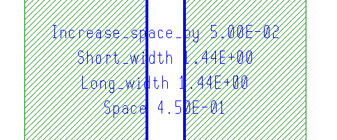

You can use a
DFM Function statement to simplify coding of traditional bucketed
rules, such as those typically used for wide metal spacing checks.
This method offers similar advantages to the method described
in “Writing Wide Metal Spacing Checks Using a Continuous Function” (reduced
code complexity and the ability to show correction values in a layout
viewer), but it does not make use of a continuous function.
Try It!
 |
Calibre Advanced DRC (eqDRC) Tutorial and Example Kit
Go to this page on Support Center
to download the complete eKit.
This example is in the device_routing_checks/wide_metal_spacing
example directory.
|
Procedure
- Create a derived error layer
where the edge clusters mark the separation distance between the
bands:
m_space = DFM SPACE Metal <= 0.60 BY EXT
- Create a derived error layer
where the edge clusters mark the width of each band:
m_width = DFM SPACE Metal <= 5.00 BY INT
- Define a DFM Function statement
that accepts two metal width values as inputs and outputs the required
spacing.
DFM FUNCTION [space_cal(NUMBER x, NUMBER y)
(x < 0.36 && y < 0.36)
? 0.09 : (x < 1.44 && y < 0.36)
? 0.25 : (x < 1.44 && y < 1.44)
? 0.30 : (x < 4.50 && y < 1.44)
? 0.40 : (x < 4.50 && y < 4.50)
? 0.50 : (x < 4.50 && y < 1.44)
? 0.50 : (x >= 4.50 && y < 4.50)
? 0.55 : 0.60
]
- Create a derived error layer
eqdrc_bucket_fnct with attached properties that define the metal
widths, required spacing, and correction values:
eqdrc_bucket_fnct = DFM PROPERTY m_space m_width OVERLAP MULTI SPLIT ALL
[Short_width = MIN(EW(m_width))]
[Long_width = MAX(EW(m_width))]
[Space = MAX(EW(m_space))]
[Increase_space_by =
space_cal(PROPERTY_REF(Long_width),PROPERTY_REF(Short_width))
- PROPERTY_REF(Space) ] > 0
The property Increase_space_by calculates the correction value
for the spacing by subtracting the actual spacing from the required
spacing determined by the function space_cal.
- Output the eqdrc_bucket_fnct
layer to a DFM RDB file named eqdrc.rdb.
eqDRC_rule_dfm_function {
DFM RDB eqdrc_err eqdrc.rdb CHECKNAME "%_l_"
ALL CELLS CELL SPACE
COMMENT "Wide metal spacing rule: Use the Increase_space_by "
COMMENT "property value to determine the spacing adjustment "
COMMENT "needed to fix the violation"
}
Results
The following figure shows the output
in Calibre DESIGNrev for a pair of failing metal bands:
Figure 1. Wide Metal Spacing Output